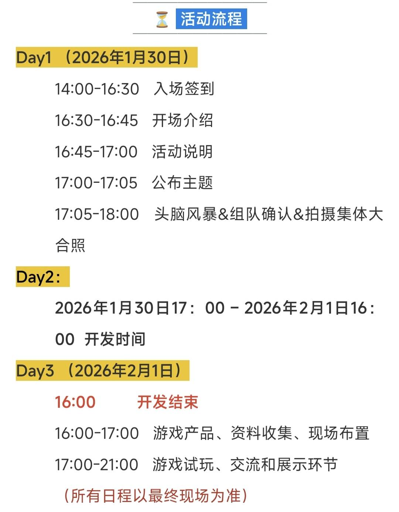

2026 Global Game Jam武汉铃空站复盘
放一下官方给的时间安排

当然，这个时间安排官方也没有严格遵守，摆摊试玩环节是没有的，因为工作人员要下班了，仅仅靠路演几分钟展示的内容而不上手玩的话还是不能很好的评价别人的游戏，故而本次复盘以本队的游戏为主
我们的状况
成员组成
这一次的gamejam队内共有6人，3线上3线下，分别是：
线下：玩法/关卡策划（职业是外包策划，后文称"策划"），玩法/关卡策划+地编+副美（大二程策美，后文称"我"），关卡策划+Godot主程+音乐音效（大二程音，后文称"程序"）
线上：3美术，按职能可粗略分为原画，ui美术，人物美术（个人对美术懂的不多，所以这块不一定是对的）
脑暴
作为最核心的策划环节，它突显了团队最大的问题：交流
由于上次成都场gj线下线上比为3：1，故上次的团队问题并不明显，本次线下线上比为1：1，又由于ggj没有筛选机制，所以大部分人在脑暴阶段并不积极，并不是所有人都表达了自己的意见，同时由于某些人会莫名其妙地消失，当人员不齐时会议就会理所当然地陷入寂静，故而特别注意：
线下>线上，人少>人多
在策划给出了核心玩法后，就需要立刻产出几个例关来阐述该玩法，哪怕是在纸上演示，这样做是为了快速开发游戏原型（给出玩法展示，确保信息传递没有丢包），即：
shut up and take my demo
然后就是美术方面的对接问题，美术规格并没有在初期就定下来，而是在开发过程中随口定的：瓦片大小128x128，其余的规格美术方面也没有透露，但从产出的素材来看，应该是没有定规格的，而定规格当然要先把可能画出来的素材先摆一道（就是概念图嘛），即：
对于美术，优先出概念图
问题
程序
我和程序对tilemap都不熟悉，但是程序认为tilemap对地编来说会更方便一点，所以地图是用godot原生的tilemap做框架的，从这里就出现了效率问题，由于不会所以要现学，这明显犯了上次聚光灯成都场的错误，即：
多考虑现有框架
策划
玩法方面在第一次提出的时候就已经很完善了（因为解谜游戏本身核心玩法就应该小而精，比如推箱子，华容道什么的，而需要做大的则是它的扩展玩法）
剩下的就是关卡设计，本来说是尽早完成几个基础的关卡然后全员想关卡的，但由于美术那边给素材很慢，所以游戏的最终版只含包括教程在内的8关，这显然是项目评估方面的失误
还有一点在于文案方面，在脑暴结束后并没有明确谁去写文案，导致最后文案也是赶出来的（其实相当于没有文案）
以上的策划方面的问题，或许可以归结于：
gj初期就需明确分工
美术的对接
在本场比赛中，美术方面也相当于在学习，素材规格不对，瓦片集不会做，人物和其他原画的产出没有达到预期效果（或者说是没有预期效果，因为没出概念图）
美术方面我了解也不多，但可以清楚一点：
在赛前需确定能力，在脑暴后即时确定需求
结果
至少做出来了个游戏，还是可喜可贺的，虽然在可玩性和视觉表现力上差强人意，但好歹比上次的成都场是好点的（上次成都场甚至没路演，这次还是能路演的）
以现在来看的话，可玩性差在扩展不足，这是解谜游戏的通病，实在想不到什么解决办法，视觉表现力差我认为是因为美术素材臃肿且不和谐（可以理解为4399小游戏那样随便扣点看上去好看的素材拼一起，到头来就发现这里那里看上去都别扭一样），团队中没有人考虑做动效，导致反馈无力，这一点可以总结为：
简洁>精美，动效>动画
好的游戏
某烤肠游戏
和上次成都场gj一样，本站gj仍然出现了反人性游戏，这类游戏的确呼声很高而且能很自然地给予受众玩家爽感（就是做现实中不敢做的事情）
玩法
玩家需要经营一个烤肠摊，游戏胜利目标是在每回合中赚够足够的钱，赚钱方法为针对不同顾客售卖不同配方的烤肠获取利润，同时玩家可以在回合结束时免费或付费获得一些升级，并开始下一回合，以此循环
其中的反人性的点为，玩家可以通过售卖劣质烤肠来降低成本，通过使用高级的添加剂来提高售价
系统
游戏中的核心数值为"美味度"和"劣质度"（名字我记不太清了，但核心就是两个指标）
游戏中每回合（时间单位为天）会告知玩家本回合中会出现n个顾客，招待完全部顾客后本回合结束进入回合结算，每个顾客都会明示其偏好的口味（如：咸，甜，辣等）和对烤肠的要求度（为一个数值），玩家需要依此制作烤肠
每份售出的烤肠需要由1个烤肠原料和2-4份烤肠佐料（添加剂）制成，玩家有从好到坏共4种烤肠原料和n种烤肠佐料选择，当玩家选定烤肠的制作配方时，系统会依次检查烤肠配方，依据不同的材料随机给出"美味度"和"劣质度"，其中，价格更低的烤肠原料的美味度更低，劣质度更高，更符合顾客口味的添加剂美味度更高
检定配方中的所有材料后，若 美味度-劣质度>顾客要求 则顾客会支付费用，若 美味度-劣质度»顾客要求 则顾客会超额支付费用，若 美味度-劣质度<顾客要求 则顾客会少支付费用，并为玩家记1分（可以理解为获得恶名值）
若计分达到5，则游戏失败（玩家因顾客举报被抓）
游戏回合结束时，玩家可以升级一个科技，科技是"添加剂槽位+1"，“某个味道(科技描述里是具体的味道，比如咸，甜什么的)添加剂美味度增加"等，同时玩家也可以消耗资金购买商店中的添加剂，购买添加剂后玩家就可在后面的游玩中使用该添加剂（初始玩家只有两种添加剂，其他添加剂需要购买，有点卡组构筑的意思）
在每个游戏回合开始时，该回合会添加一个随机buff（如本回合中所有甜味添加剂的美味度降低什么的）
评价
毋庸置疑，它没有切gj的主题，但这没有关系，游戏界没有命题作文，它的系统可以说是很完善了，以至于可以往其中加入很多额外的元素
作为一个反人性的游戏，它和上次成都站gj的吃人游戏一样，潜力巨大
某我们游戏的上位解谜游戏
游戏的机制在此不赘述，这里只说学到的东西
首先是简洁，说是我们游戏的上位游戏，但它在机制方面的体量是不如我们游戏的，但要说哪个好，当然是这个游戏好，因为它比我们游戏更遵循奥卡姆剃刀原则，这个游戏的关卡策划有能力用更少的机关和道具构筑出更多的关卡，这无不告诉诸位策划，“如无必要，勿增实体” 的重要性
并且，它的美术也比我们游戏更简洁，简直就是我们游戏体量大但杂糅的美术的反面，它的美术注重于单个素材，它的地块只有三种，也就只有三个美术素材，而我们的游戏的墙每个方向都有对应的素材，同时，在某些重要的素材上，他们的美术为其添加的动画，它的动画也并不复杂且及其统一，都是让其描边线条抖动，这无疑在强调场景元素的同时也能确保游戏在玩家思考时保持运动
其次是知识锁，这一关卡策划们耳熟能详的名词再一次出现在了这里，做这一游戏的关卡策划无疑是老道的，但在本文中赞美毫无意义，我想，做这种引导或许不是简单的复盘可以学习到的
以上